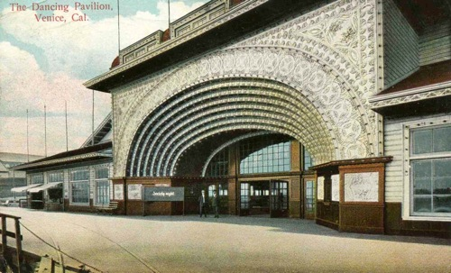
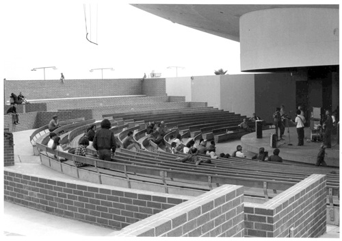

A Walk Down The Boardwalk
I recently had the good fortune to be asked to take a walk down the boardwalk. And not just a casual stroll, but an official Venice Beach Walking Tours promenade, conducted by local big-guy Jeffrey Solomon. And I do mean a big guy; he rises a good 6 and a half feet above the terra firma, not counting those high-soled sneakers he's constantly strutting around in.
I have to interject - I recently asked him how tall he was actually, and here's his reply, simple and straight-forward: "I wear Z-Coil shoes that have a powerful spring in each heel that gives me more than a bouncy feel. They probably shoot my height up from about 6'3" to 6'5". I wouldn't trade them for anything - the souls propel me forward, and I get between 40% to 50% rebound. Since my heels never hit bottom there's no shock waves created that could damage my knees, hips and lower back."
And he's ubiquitous in his black t-shirt, sporting the big V logo for his walking tour expedition, silver shades, and large, loud blabber, per above. All in a great way.
He's the founder of said tours, commencing from the corner of Rose Avenue and the Ocean Front Walk every Friday, Saturday and Sunday at 11 am sharp. Don't be late or you'll miss out on his introduction to all things Venice, and his bit of heaven - a reality ha
rdly anyone knows about.
It's a great tour, meant I think to inform the many tourists visiting our famous town on some of the facts about the boardwalk, past and present. And the minutia of his comments even kept an old timer like myself wanting to learn more about this northern section of Venice, in particular. He's lived just off the boardwalk - you get to see his pad along the way, just before he shows you the old brothels on Navy Street, and he definitely knows his way around that area. Here's his response to how long he'd lived at his place: "We have owned our condo since 1978, 30 years ago. Before meeting my wife, Fran, I lived at the corner of Pacific and 25th Ave. Everytime a bus came by, it shook the building. Long ago in the early 60s, I lived at #10 Rose Avenue (a rickety apartment building that is gone now)."
I'd be willing to nominate him for the new mayor of the boardwalk, if anyone would second it. It's great watching him interact with all the locals, and newbies, as he leads you on his merry way down the bituminous - he also tells you where that came from recently - letting your own comments help guide and suggest the next idea to come from him. Why, on the day of our tour - there were three other ladies tagging along with us - we met so many locals, a photographer or two, s
treet artists, the also ubiquitous Harry Perry, apartment building owners, managers of the muscle beach area, vagabonds and other surely-they're-tourists, that I'd had a wonderful re-education to the greatness of Venice's boardwalk.
And to top things off, it all ends with a lunch at Danny's Restaurant, where you end up feeling refreshed and satiated in... all things Venice. It made me feel proud to be a Venetian, helping to relive some of the great occurrences from the past, all just a casual perambulation away from my own doorstep.
However, in all fairness, I was asked along to also help provide some historical keynotes, due to my half-vast knowledge of Venice history. Jeffrey had already told me he owned all the books on Venice history, but he wanted my own unique take on things along the way. And I was glad to oblige. As best I could, off my cuff. But when I got home, I felt I should gather bits from my earlier writings, and send them to him, to really put the historical clincher on this great Venice Beach Walking Tour.
So if you want to take your own self-guided tour down the boardwalk, here's what I'd add, to help show some historical importance to your ganderings and gazings.
--Right at the corner of Rose, the big apartment building was originally the King George Hotel. While staying at the hotel on the afternoon of May
18, 1926, Aimee Semple McPherson, founder of the International Church of the Foursquare Gospel, was spotted swimming off the beach near there, and then she disappeared. She was presumed to have drowned, but a massive search, in which a professional diver and a church member themselves drowned, failed to turn up a body or any evidence. Then on June 23, three days after an all-day memorial service at the Angelus Temple attended by thousands, she turned up in the Mexican town of Agua Prieta, claiming she had been kidnapped and held in a shack in the Sonoran Desert. It was soon established, however, despite her angry denials, that she had actually spent the month in a cottage in Carmel, California, with Kenneth Orniston, a married engineer on the staff of her radio station KFSG.
--
Dangerous stunts have always fascinated Venice's beach crowds. It was no exception when Archie Crisp - billed as the 'Human Fly' - arrived in Venice in November 1916 to display his daredevil climbing stunts. He was formerly a tightrope walker who had climbed the Flatiron Building in Manhattan. He proceeded to climb both the Waldorf and King George Hotels on Ocean Front Walk using just a few inches of ornamental brick work as a foothold. At the top of the walls and on windowsills he stood on his head, much to the astonishing amazement of the gawkers below.

--Walking south past Dudley and all the historical significance of that short block eastward - the Venice West Café in the 50s, Sponto Gallery and 7 Dudley Cinema today, the Cadillac Hotel and the great Piccolo Ristorante - we pass what some call the Chaplin Courtyard, but there's no evidence of Charlie ever having anything to do with the place.
--Ever since Abbot Kinney purchased the Ocean Park tract of land in 1891, there were already folks who had decided to live at the beach. One of the purported "oldest houses in Venice" is the Nike Blu House, at Sunset and 523 OFW. You know, that former residence that's been clothing stores, movie locations, radio shack (anybody remember the KIIS-FM summer house and the blow-out emceed by Jerry Springer?), art gallery, and rentable party house recently. It was built in 1901, and fortunately, it's still intact.
--The newly built Thornton Lofts complex replaced an old parking lot. Back in the late 70s, this parking lot featured one of Venice's first open-air food markets, the Fruit Tramps, who later moved to 429 Ocean Front Walk, right next door to Figtree's Café, which has been there since 1978. Got that?
In the 50s, the Jewish Congregation Beth Yehuda occupied the building at 721 Ocean Front Walk and Park, now a law office.
--Public trams furnished fast, frequent transportation along Ocean Front Walk between Windward Ave. and Pier Ave., and connected with other trams from Pier Ave. to the Santa Monica Pier at the foot of Colorado Street. The fare was only 5 cents, much later raised to 10 cents. The trams were often raced and chased by barefooted boys who sometimes tried to hook rides, hanging onto the back of the tram. They usually met an untimely circumstance.
During the twenties, there were some battery powered upholstered wicker benched trams with lever type hand controller and mechanical brake at one end, but during the 1930s they were replaced by larger, awning-covered side-seating trams powered by four-cylinder Chevrolet engines, similar in design to the Ford Model A engines.
On days of passenger overload, the trams, which were garaged at Brooks Ave. and Speedway, were supplemented by two vans, named "La Paloma" and "La Golondrina."
--In 1927, at Brooks Avenue where the recently updated restrooms are located, the City Parks Department built a three-story Spanish-styled lifeguard headquarters, directly on the beach. It remained one of the few ocean-side structures along that section of the beach, until it was razed in 1952, when all the structures on the west side of the boardwalk were ultimately demolished.
--The office building at 909 Ocean Front Walk, which now houses the
popular Venice Beach Freak Show, among other attractions, was architecturally based on Abbot Kinney's original Lagoon Bathhouse, which opened in February, 1906. Today's Ace Market Place is located at the original location, at Windward and Main. It featured a 70 x 70 foot heated salt-water plunge and locker space for over 500, with each dressing room open to sunlight. Later in September 1911, Venice opened its Union Polytechnic High School at that location, where one principal and five teachers taught 52 students, mostly in the 9th grade. Imagine the thrill of attending school right next to the hugely popular central lagoon, and probably having to boat to class every day. It and Venice's Central School, now known as Westminster Elementary on Abbot Kinney at Broadway, helped educate the local population of around 10,000. 700 children total were enrolled in Venice schools back then.
--The Hotel Waldorf, still standing supreme at Westminster and the Boardwalk, was supposedly the first building erected west of somewhere that had an elevator or something installed in it. I do know that it was very swanky during the 20s, and that the penthouses once claimed Charlie Chaplin as an inhabitant. Also those everywhere human flies were always climbing about. Old-time locals definitely pine for the old Lafayette Café, which was a cornerstone of boardwalk culinary culture during the 70s and 80s, loca
ted in the front corner. They had the Beatles' I Know Your Name on the jukebox and they're heuvos doctored was the best, ever! Today, the building is the center of the hip new Westminster street scene.
--
Venice Beach Suites & Hotel, 1303 Ocean Front Walk, used to be 'The Potter' Apartments, during the 1930s. Steam Heat with Rooms By The Day Or Week, read its exterior signage.
--In March of 1908, C.H. Russell, one of the original architects of Venice-of-America, produced plans for the ocean-side $100,000 Bath House. Today, it's the expansive lawn area on the west side of the boardwalk, between Market and Horizon Avenues. Originally a lone open-air bathing spa, it ultimately ended up utilizing the Spanish Renaissance style for its outstanding architectural style. The structure featured large plate-glass windows on the western side, a 112-foot diameter glass dome over the 100 x 150 foot swimming pool, and electrical devices for creating startling effects in the water of the plunge. No foolin! Shockarooni! Observation towers provided character to the building's appearance, and also afforded a great vantage point for looking seaward. This structure was one of the gathering points in early Venice, until urban-renewal attempts caused its destruction in the late 1940s.
--The building that now houses the famous Sidewalk Cafe was o
ne of the last of Abbot Kinney's Venice buildings and was originally designed as a four-story building, but only the first floor was ever constructed. It was sold to the Harrah family (of later Nevada gambling fame) and was turned into a bingo parlor (Budgo, because bingo was illegal). During prohibition, underground tunnels were expanded to accommodate bootleggers. In the 1950's and early 60's the building housed artists' studios and was, in fact, the crash pad for beatnik poets such as Jack Kerouac. Before the Goodfaders bought it in 1976 from the Hormel hot dog people, the vacant building had stood abandoned for almost 20 years. Motorcycle gangs used the arches as their own parking space. Today, it's one of Venice's iconic locations, for both great eats and great sunsets.
--Back in 1911, the Neptune Theatre was the first movie theater to open in Venice, specifically for showing films. It was located at 1417 Ocean Front Walk, presently the site of the Art of Venice and the Peace doodad souvenir shops. Just south of the Sidewalk Café. The 750-seat theatre was owned by David Evans, and was operated under a lease by Los Angeles vaudeville impresario Arthur S. Hyman. The 2-story structure was immaculate in its Italianate architecture. It later became the Hyman Theatre, for a short while in the 30s.
--
Some of the now-gone original buildings in the Windward district in
cluded: the Plunge, the Auditorium, Menotti's Buffet - later becoming the beatnik hangout the Gas House, the Neptune Theatre, the old St. Mark's Hotel, the Bridge of Sighs. The ultimate coolness of the arched walkways when they were outlined in neon in 1937, the once-great cornices embellishing the tops of the buildings. The total complete grandeur of it all. Before its demise.
--
March 13, 1905 the letter arrived from Washington, which granted permission, finally, for the construction of the $100,000 sea wall, the first official private breakwater in the United States. However, it arrived one day too late, the day after the tremendous winter storm that destroyed the Abbot Kinney Pier, along with the Ship Café, the Pavilion and the Auditorium. Today it's the icon for the VBWL surfing gang, and a popular weekend fishing location.
--Baron Long's Ship Cafe, built in 1905 alongside the Abbot Kinney pier and originally run by Carlo Marchetti, was the "in" spot to find some gambling action. Named the "Cabrillo," the combination hotel-restaurant was fashioned after a Spanish galleon and served up high-priced cuisine in the main dining room, or in private salons on the second deck. The staff were uniformed like sixteenth-century naval officers.
--The first bathing beauty contest ever held in this country began in Venice in 1912 and became an annual affair.
The bathing suit parade, inaugurated in 1913, officially opened the summer tourist season.
On May 17, 1920, an enormous crowd attended the now-famous Bathing Suit Parade and 60,000 pushed into spaces along the short procession route. Only those with marine or opera glasses really got a good look because of the great multitude of onlookers. Among the 200 contestants, only the swimmers wore tight or close-fitting knit costumes and a few had rubber suits. The contestants passed in front of the viewing stand at the band plaza and a woman remarked humorously that the balance of the crowd was one female to twenty-five males. "It is not the bathing suits that the men came to see. It's the girls who are in them," she chuckled.
--George Freeth, born in Honolulu in 1883, was half royal Hawaiian and half Irish. Henry Huntington imported George from Hawaii in time for the summer season of 1907, all to do just one thing, ride a surfboard. At the time, no one had ever seen anything like it, this man "walking on water."
In the local papers on October 1, 1908, Freeth claimed "to be the champion surfboard rider in the world." And he kept on amazing the crowds with his daring-do on the water. In Venice, Freeth set up the first volunteer life-saving crew based on the Venice pier, while still surfing every day. By wintertime he and his boys had saved 50 people from drowning. And George was always the first to dive in, and always he came home with his victim safe and sound.
George was only 36 years old when he died in 1919. The great influenza epidemic, which swept the nation that year, ended the promising career of one of Southern California's most beloved heroes.

--The talk of 1925 among Venice residents was annexation into the city of Los Angeles, which won approval in an October 2nd vote. Power to Los Angeles was transferred on November 25th. The L.A. city police immediately began enforcing the "Blue Laws," affecting Venice's amusement zone. The Sunday dancing ban and anti-gambling statutes went in effect and pier business consequently suffered. It wasn't until the following spring that city voters, in an accommodation to Venice, set up special amusement zones so that Sunday dancing could resume on May 16th.
The Venice Ballroom on the Venice pier was once again crowded with Sunday dancers. "Ben Pollack and his Californians" occupied the ballroom bandstand in 1924 and 1925. Pollack (1903-1971 - by hanging himself at home in Palm Springs), a drummer and vocalist, was building a reputation as having the first large white jazz band. While his orchestras were basically commercial dance bands, they also gave soloists plenty of freedom in determining the shape of the music. Fud Livingston, Al Harris, Harry20Greenberg, Wayne Allen, Dick Morgan and Gil Rodin were among the players who made music for the "Californians." Ben would very often use the expression "May it please you" when introducing or ending a song.
In 1925 a 16-year-old Chicago musician joined Pollack's group. The young clarinetist had come to California at Pollack's invitation. His name was Benny Goodman. Two weeks later, another young musician joined the "Californians," a 21-year-old trombone player named Glenn Miller. Both he and Goodman were to gain individual fame later as great musicians and bandleaders. While in Venice, they roomed together at the Haley Hotel, at the southwest corner of Market & Trolleyway (Pacific), and played "Hot Stuff," "Deed I Do" and other Pollack favorites from the ballroom stage.

--Ground was broken on September 21, 1960, and the Venice Pavilion was completed in 1961. Designed by architect Vernon Duckett and Associates as an open, outdoor amphitheatre, the 7,000 square foot structure originally accommodated 1,200 spectators on concrete slab seats in a semi-circle around the stage. Other features included an indoor recreational area beneath the pavilion, a paved picnic area with barbecues and picnic tables, a concession building, and public restrooms. The stage was the only portion of the main building that was roofed.
Salt spray from the nearby20ocean often resulted in damp air and wet seats. Patrons were uncomfortable and the Recreation Department received a number of complaints. As a result, the city's Public Works Department designed and installed a roof over the building in 1970. However, the roof resulted in an "echo chamber" effect with the pavilion, and an acoustical ceiling was later placed in the building.
The facility was officially closed in 1984, due to inevitable deterioration and lack of use. Finally, in January 2000, the California Coastal Commission voted 8 to 1 to demolish the hulking community center. The first of the demolition equipment arrived in March. From there on until May 1st, it was all concrete crushing, hauling into big dunes of fragments, and more crushing of the old pavilion, into gravel-sized chunks to be used in the repaving of the entire Ocean Front Walk. Mayor Richard Riordan finally dedicated the improved boardwalk on January 15, 2001.
--The massive steel sculpture "Declaration" by artist Mark di Suvero, so prominent at the extension of Windward Avenue, was officially dedicated on October 10, 2001. Towering like a lighthouse composed of a pair of tilted triangles, this monument was described as either a beacon of playfulness, or as the "big masonic logo." Originally intended to stay put for only 6 months, the sculpture is still there.
--
Ah, wacky Ve
nice. Where else could you have found a tribe of native East-Indian Igorottes living on the early pier, with their leader fervently pleading to become town dog-catcher? Or human flies scaling boardwalk buildings, along with a guy willingly setting himself on fire and then jumping from a low-flying plane into the salty depths of the Pacific Ocean, at night, no least? No less?!
By the way, their names were Chief Chy-anne - of the Igorotte tribe, Archie Crisp and Jack Williams - the human flies, and Jack Cox - the chicken-suited bi-plane diver.
--
As planned out early-on by the designers of Venice-of-America, Kinney's architects incorporated several innovative building concepts into the town. By digging several interconnecting tunnels under the alleyways in the Windward business district, they were able to pump hot salt water to the hotel rooms, and rid the area of unsightly power lines, while also allowing hotel guests to pass under the Ocean Front Walk and gain access to the beach in their bathing attire. For shame getting caught in public in those lude, all-woolen swimming costumes!
And these tunnels were also put to nefarious uses as well. During the Prohibition era, those same tunnels were used to run bootleg liquor from the pier to the speakeasy and bordello located under the present day Townhouse bar.
Local electro-wizard Larry Albright remembers first-hand visiting the tunnels beneath the old Gas House,
located at Market and Ocean Front Walk, when he lived behind it from 1961 to 1963. He said, "there were definitely a lot of merchandise and women transported along that tunnel from the old Gas House down towards Windward." And then he let out a big, knowing laugh.
--Windward Avenue and parts of Ocean Front Walk are still decorated by rows of columns supporting the old arcades of Venice of America. These cast iron sculptures were done by Felix Peano, an Italian sculptor whose work achieved more than a modest degree of fame at the turn of the century. He was employed by Abbot Kinney to add his embellishments to the dream called Venice of America. The faces on the columns are classical in style, easily traceable to the influence of ancient Rome. Yet Peano did not go all the way back in time for his inspiration. He found it in a young girl of 17, Nettie Bouck, who was living on the ocean front in 1904.
--
It was also announced that Venice "Muscle Beach" was going to be built on Venice beach, with a grand opening planned for July 16, 1950. The area along Ocean Front Walk and Windward Avenue had turned into a virtual ghost town, and the opening of the new Muscle Beach would be the occasion of a community wide grand opening celebration.
Along with the Muscle Beach area, between Avenue 17 and Avenue 18, the existing children's playground would be enlarged. And a new parking lot, for 929 cars, would be built at the end of North Venice Boulevard, where it joins the Sunset Pier.
At the grand opening of the Venice Athletic Beach, which was noted as "the greatest thing Venice has ever seen," over 75,000 people thronged to Venice to view the parade which inaugurated the beach celebration. It featured lavish floats, bearing local beauties and motion picture starlets, and crack marching units including bands and majorettes.
--
So, that about wraps it up for today's geography lesson. I'd recommend the cheeseburger at Danny's, where you can gaze upon old artifacts from our local history, a rogue's gallery of caricatures featuring today's local citizenry, and stand on your head to truly capture the coolness of one of the last remaining original gondolas, supported over the entryway bar area. It's all a great ending to a wonderful tour, and I recommend it heartily. Be sure to give Jeffrey a hard time, from me.
For more information, contact the Venice Beach Walking Tours at info@venicebeachwalkingtours.com.
|